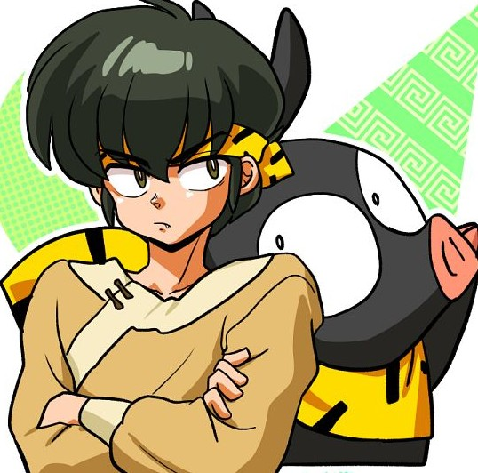

🐷 Ryoga Hibiki

Ryoga Hibiki es el eterno rival de Ranma y uno de sus amigos más cercanos. Tiene un terrible sentido de la orientación y una gran fuerza.
🌀 Personalidad
Es muy orgulloso, pero también tímido y noble. Aunque es fuerte en la batalla, suele ser torpe y sufre mucho por su amor no correspondido por Akane.
❤️ Relaciones
- Akane Tendo: Está enamorado de ella y hace todo lo posible por impresionarla.
- Ranma Saotome: Lo considera su rival, aunque también es su amigo en el fondo.
- Ukyo Kuonji: Tiene una relación amistosa con ella.
🔎 Curiosidades
- Se convierte en un cerdito cuando toca el agua fría.
- Su mala orientación lo hace perderse incluso dentro de una casa.
- Posee una fuerza sobrehumana.
🔊 Escucha su voz
🔙 Volver a la lista de personajes